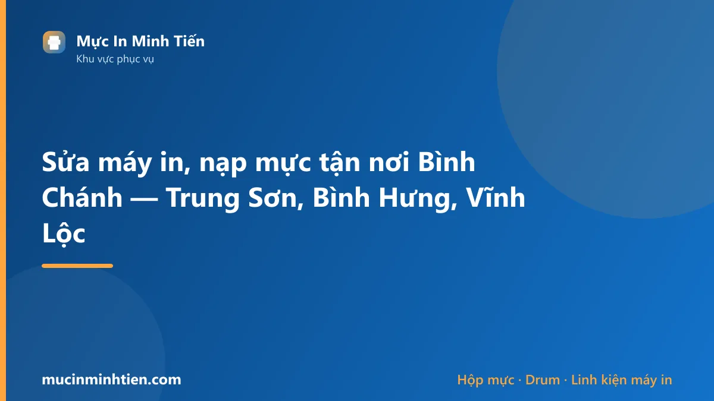
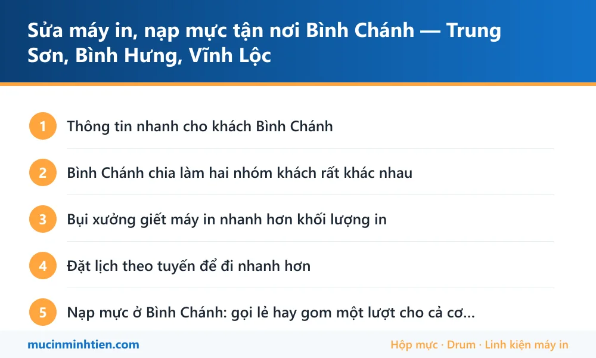

Sửa máy in, nạp mực tận nơi Bình Chánh — Trung Sơn, Bình Hưng, Vĩnh Lộc

Minh Tiến nhận sửa máy in và nạp mực tận nơi khu vực Bình Chánh — khu dân cư Trung Sơn, Him Lam, Bình Hưng, Tân Nhựt và cụm xưởng Vĩnh Lộc. Địa bàn rộng nên nên đặt lịch trước nửa buổi; kỹ thuật viên mang sẵn vật tư cho cả máy laser, máy phun lẫn máy in kim.
Thông tin nhanh cho khách Bình Chánh
| Hạng mục | Chi tiết |
|---|---|
| Thời gian có mặt | Khu Trung Sơn – Him Lam – Bình Hưng: 45–60 phút. Vĩnh Lộc, Tân Nhựt và các xã xa hơn: đặt lịch trước nửa buổi để gom tuyến |
| Khu vực nhận | KDC Trung Sơn, Him Lam 6A, Bình Hưng, Phong Phú, Tân Nhựt, Vĩnh Lộc, Tân Vĩnh Lộc, khu vực dọc Nguyễn Văn Linh và Quốc lộ 50 |
| Loại máy nhận | Laser, phun, đa năng, và máy in kim in nhiều liên — loại máy kho hàng và xưởng hay dùng |
| Làm được tại chỗ | Nạp mực, thay drum – gạt – trục từ, thay ruy băng và đầu kim, vệ sinh, cài driver, nối máy in qua mạng |
| Khách hay gọi | Phòng khám, trường học, xưởng may, kho hàng, công ty gia đình |
| Hợp đồng bảo trì | Xưởng và kho nhiều máy có thể làm bảo trì định kỳ theo tháng, giá gọn hơn gọi lẻ |
Bình Chánh chia làm hai nhóm khách rất khác nhau
Địa bàn này rộng và không đồng nhất. Máy in ở khu dân cư và máy in trong xưởng hỏng theo hai kiểu hoàn toàn khác nhau, nên cách chuẩn bị cũng khác.
Nhóm 1 — khu dân cư Trung Sơn, Him Lam, Bình Hưng: nhiều phòng khám, phòng răng, trung tâm dạy thêm, văn phòng công ty nhỏ. Máy laser để bàn và máy đa năng, in tài liệu và toa thuốc mỗi ngày. Bệnh thường gặp là mờ chữ, kẹt giấy, và lỗi mạng khi nhiều máy tính dùng chung một máy in.
Nhóm 2 — xưởng và kho ở Vĩnh Lộc, Tân Nhựt, Phong Phú: môi trường nhiều bụi vải, bụi gỗ. Máy ở đây bẩn nhanh gấp mấy lần máy văn phòng, và rất nhiều nơi còn dùng máy in kim để in phiếu nhiều liên. Máy in kim hỏng chủ yếu ở ruy băng và đầu kim, là thứ thợ máy in laser thuần thường không mang theo.
Khi gọi, khách nói rõ máy đặt trong xưởng hay trong văn phòng — chỉ một câu đó thôi cũng đủ để kỹ thuật viên mang đúng đồ.
Bụi xưởng giết máy in nhanh hơn khối lượng in
Ở xưởng may và kho, thứ làm hỏng máy không phải số trang in mà là bụi. Bụi bám vào trống và gương quang làm bản in mờ từng mảng; bụi lọt vào bộ kéo giấy làm máy nhai giấy; bụi tích trong cụm sấy gây kẹt giấy liên tục.
Ba việc giữ máy trong xưởng sống lâu hơn, làm được mà không tốn tiền:
- Đặt máy trong tủ hoặc hộp che, chỉ hở mặt trước — riêng việc này đã giảm hẳn số lần gọi thợ.
- Không để máy ngay dưới quạt công nghiệp hoặc lối ra vào nhiều bụi.
- Vệ sinh định kỳ 3–6 tháng thay vì đợi hỏng. Vệ sinh một lần rẻ hơn thay trống một lần.
Xưởng nhiều máy nên làm bảo trì định kỳ: kỹ thuật viên tới theo lịch, vệ sinh và thay vật tư tới hạn cho tất cả máy một lượt, không phải gọi gấp giữa ca sản xuất.
Đặt lịch theo tuyến để đi nhanh hơn
Bình Chánh rộng, đi một ca lẻ ở Vĩnh Lộc mất thời gian gần gấp đôi so với khu Trung Sơn. Cách bên mình làm để không bắt khách chờ lâu:
- Ca ở khu Trung Sơn, Him Lam, Bình Hưng nhận trong ngày như các quận nội thành.
- Ca ở Vĩnh Lộc, Tân Nhựt, Phong Phú gom theo tuyến, đặt trước nửa buổi hoặc trước một ngày là chắc chắn có người.
- Công ty có nhiều máy thì gộp một lần kiểm tra toàn bộ thay vì gọi lẻ từng máy — tiết kiệm cho cả hai bên.
Nạp mực ở Bình Chánh: gọi lẻ hay gom một lượt cho cả cơ quan
Địa bàn rộng nên cách đặt việc ảnh hưởng tới chi phí nhiều hơn các quận nội thành. Khách Bình Chánh gọi nạp mực, đổ mực hay thay mực máy in đều là một việc, nhưng nên nghĩ thêm một bước:
- Nhà riêng, cửa hàng một máy: gọi lẻ bình thường, kỹ thuật viên ghép vào tuyến đang chạy.
- Trường học, phòng khám, văn phòng xưởng nhiều máy: gom một lượt. Một chuyến kiểm tra và nạp cho tất cả máy rẻ hơn hẳn gọi lẻ từng lần, lại không phải chờ nhiều lượt.
- Xưởng ở Vĩnh Lộc, Tân Nhựt: nên kèm vệ sinh máy vì bụi vải và bụi gỗ làm hộp mực bẩn nhanh, nạp xong mà không vệ sinh thì vài tuần lại in mờ.
Khu Trung Sơn, Him Lam, Bình Hưng nhận trong ngày như nội thành; các xã xa hơn đặt trước nửa buổi để gom tuyến.
Bảng giá dịch vụ tại Bình Chánh
| Hạng mục | Áp dụng cho | Giá tham khảo |
|---|---|---|
| Nạp mực hộp mực laser | HP, Canon, Brother phổ thông | 80.000 – 150.000 đ |
| Vệ sinh máy in tận nơi | Máy đặt trong xưởng, kho nhiều bụi | từ 100.000 đ |
| Thay trống (drum) | Máy in laser | từ 120.000 đ |
| Thay ruy băng máy in kim | Epson LQ và các dòng in nhiều liên | Kiểm tra rồi báo giá |
| Xử lý kẹt giấy, máy nhai giấy | Máy nhiều bụi, quả đào mòn | Kiểm tra rồi báo giá |
| Bảo trì định kỳ nhiều máy | Xưởng, kho, trường học | Báo giá theo số lượng máy |
Giá vật tư lấy đúng theo kho — xem bảng giá 773 mã. Kỹ thuật viên kiểm tra và báo giá trước khi làm; khách đồng ý mới thay.
Vật tư mang sẵn theo xe khi tới Bình Chánh
Xe đi tuyến Bình Chánh mang thêm nhóm vật tư cho máy làm việc trong môi trường bụi và máy in nhiều liên:
| Vật tư mang theo | Dùng cho | Ghi chú |
|---|---|---|
| Hộp mực laser phổ thông 12A, 85A, 35A, CF226A | Phòng khám, trường học, văn phòng xưởng | <a href="../../muc-in/">Tra theo mã mực</a> |
| Ruy băng máy in kim | Máy in phiếu nhiều liên ở kho, xưởng | Đọc đúng mã ruy băng trên hộp cũ khi gọi |
| Drum, gạt mực, trục từ | Máy bẩn do bụi, bản in mờ từng mảng | Thay lẻ, không cần thay cả hộp |
| Quả đào, bố thắng, con lăn | Máy nhai giấy, kéo lệch | Hao nhanh nhất trong môi trường bụi |
| Bộ vệ sinh chuyên dụng | Thổi bụi trong máy, lau gương quang | Đi kèm gói vệ sinh định kỳ |
Lỗi hay gặp ở Bình Chánh và bài hướng dẫn tự xử lý
Nhiều ca chỉ cần làm theo bài là xong, không phải gọi thợ. Đọc trước cho đỡ tốn tiền:
- Máy in bị sọc ngang: bảng chu kỳ lặp — đo khoảng cách vệt là ra đúng bộ phận hỏng
- Máy in không kéo giấy — quả đào bám bụi là nguyên nhân số một ở xưởng
- Máy in bị lem mực — hay gặp khi cụm sấy bẩn
- Máy in ra giấy trắng — kiểm tra theo bảng trước khi gọi thợ
- Cách cài đặt và chia sẻ máy in qua mạng LAN — văn phòng xưởng nhiều máy tính dùng chung

true